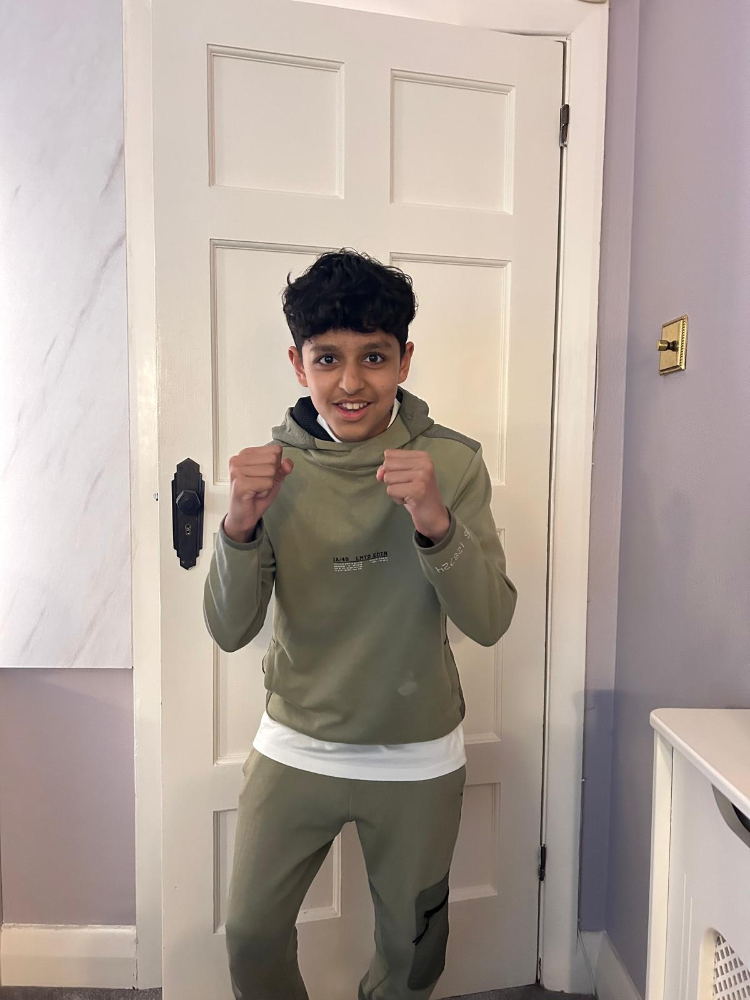
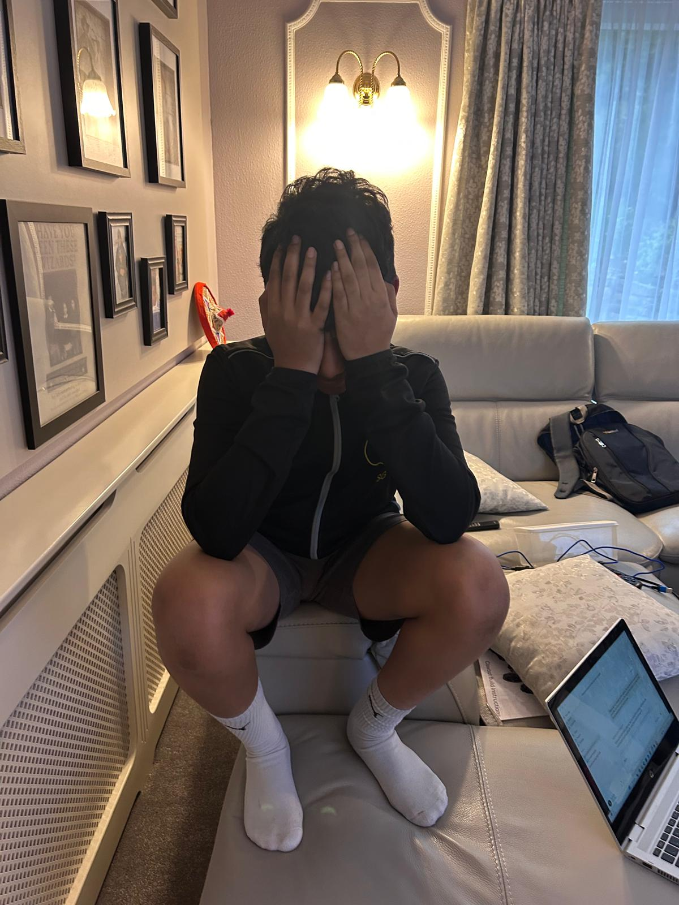
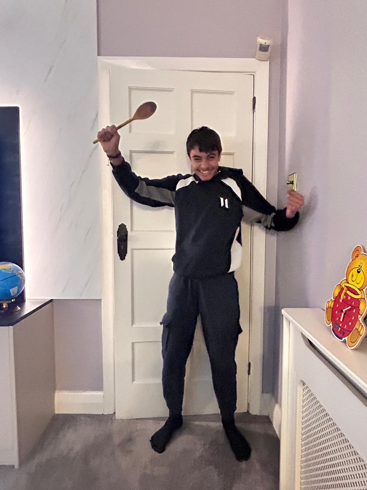

A first race...
01 Overview
A few days ago, we made an obstacle course using household objects to test our driving skills and who would go through for our starting two in the challenges in the future.
02 Track Map
03 Racing Times
Each driver completed two runs. The results are recorded below — lowest average time wins.
| Driver | Run 1 (s) | Run 2 (s) | Average (s) |
|---|---|---|---|
| Aryan | 260 | 221 | 241 |
| Lakshman | 212 | 210 | 211 |
| Naitik | 167 | 111 | 139 🏆 |
| Sarvesh | 124 | 165 | 146 |
Naitik posted the fastest individual lap of the day — 111 seconds on Run 2 — well clear of the field. Sarvesh was closest with a 124-second opening run, but his second run cost him the top spot.
04 How It Worked
Each one of us had two runs to try and set the fastest lap times and eventually have the lowest average time. In each run, every time an object was hit a 2-second penalty was placed upon the driver and this proved to impact the results massively There were two clear frontrunners after the first round, Naitik and Sarvesh. Lakshman and Aryan, especially Aryan, struggled to keep up and fell far behind.
It was a gripping competition and came down to Naitik's final run… if he got a sub 122 second time, he would claim victory. It seemed impossible, but he prevailed and came out on top.
05 Reactions
Naitik claimed the VEX V5 Grand Prix crown with a blistering 111-second second run. Agony, agony for Sarvesh. Ecstasy, ecstasy for Naitik. And as for Aryan — inexplicably celebrating despite finishing last — the less said the better. WHY?!!!!


